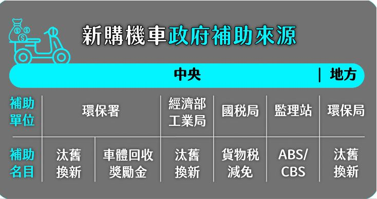
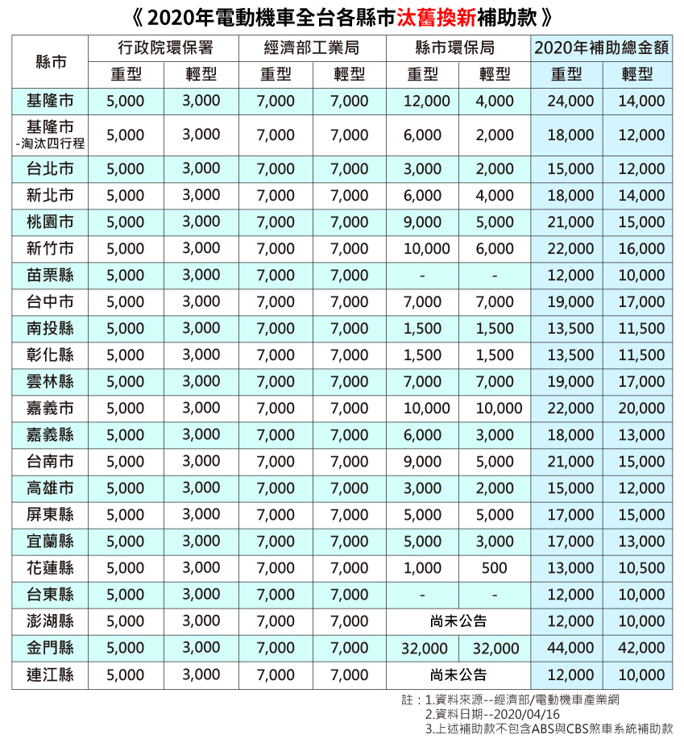
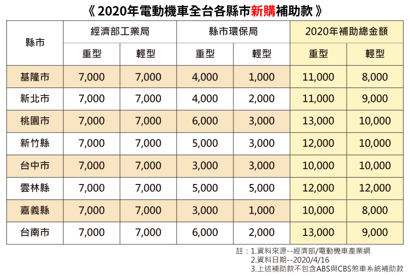
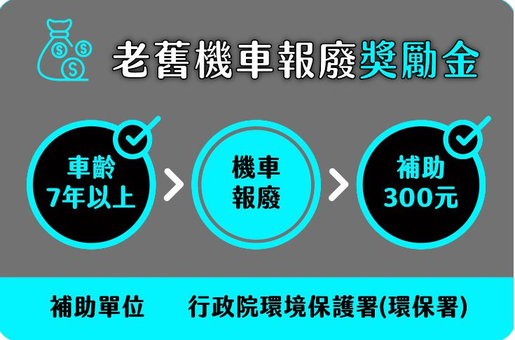
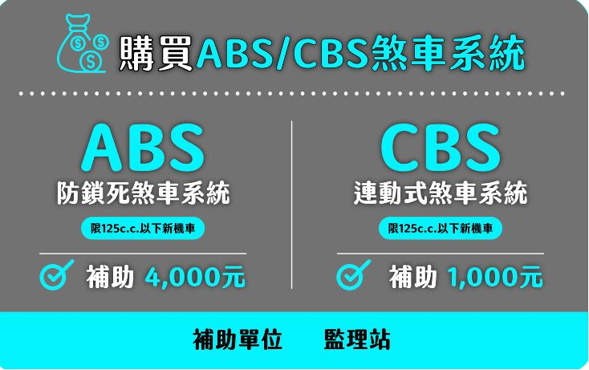
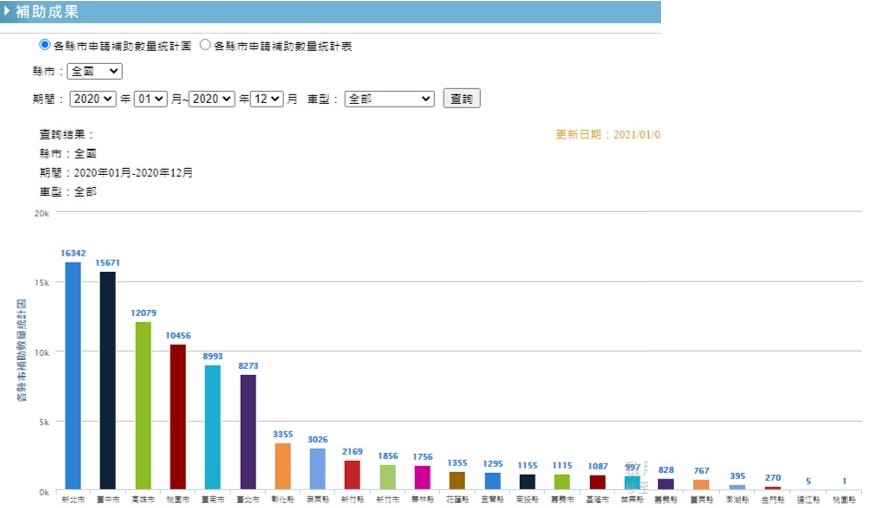
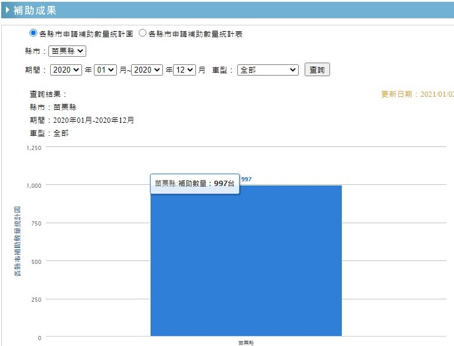

為甚麼政府要補助電動車?
電動車的好處
電動車的好處
1、環保：電動機車採用動力電池組及電機驅動動力，它工作時不會產生的廢氣，不排尾氣污染，對環境保護和空氣的潔凈是十分有益的，可以說幾乎是「零污染」。
2、低噪音：電動機車不會像傳動機車那樣發出噪音，它所產生的噪音幾乎可以忽略不計。
3、經濟：電動機車使用成本低廉，只有汽油車的五分之一左右。而且能量轉換效率高，同時可回收制動、下坡時的能量，提高能量的利用效率。在夜間利用電網的廉價「谷電」進行充電，起到平抑電網的峰谷差作用。
4、易保養：電動機車採用電動機及電池驅動，無需傳統發動機哪些繁瑣的養護項目，比如：更換機油、濾芯、皮帶等。電動機車只需定期檢查電機電池等組件即可。
5、政策優：搖號中籤率高，補貼高，免徵購置稅等政策上的優勢較為明顯。
這樣補最划算
補助來源
當前針對購買機車補助，區分為中央與地方，中央有環保署、經濟部工業局、國稅局、監理站等不同單位，而地方則有各縣市的環保局加碼補助。
汰舊換新
中央環保署方面，針對汰舊換新加以補助，你只要淘汰的是2007年6月30日以前出廠的燃油機車，並新購電動二輪車或七期燃油車，就可依照車型的不同，獲得3,000元至5,000元不等的補助。 值得一提的是，針對汰舊換購電動機車，花蓮縣只補助最多1,000元，是因為還有額外加上所謂的「花東基金」加碼的10,000元基金補助，不過這是有限額的，所以如果你是在花蓮或台東縣要買電動車搶補助，那手腳可要快一點！
新購補助
如果是第一次購買電動車的朋友也有相對應的補助金額可以參考。
老車報廢
除了汰舊換新補助以外，中央環保署也針對老舊機車報廢提供獎勵金，只要你的舊車車齡達7年以上，報廢後都可以獲得300元的補助。同樣是中央的經濟部工業局方面，也針對汰舊換新加以補助，只要你淘汰2007年6月30日以前出廠的燃油機車，並新購電動機車，就會補助5,100元至7,000元不等，但這裡要注意的是，若你購買的電動機車採用國產電池芯，就會額外多補助3,000元，
煞車系統
為了提升台灣民眾騎乘機車的安全，政府也鼓勵民眾換購有ABS防鎖死煞車系統或CBS連動式煞車系統的車款，所以買有ABS的新車就補助4,000元，買有CBS的新車則補助1,000元，但注意，僅限於排氣量125c.c.以下車款。

大家都買了，你還不買嗎?
全國電動機車補助
全國民眾申請電動機車補助的統計圖，2020一整年已快達十萬。
苗栗電動機車補助
在2020這一年，苗栗縣補助數量達到997台。
